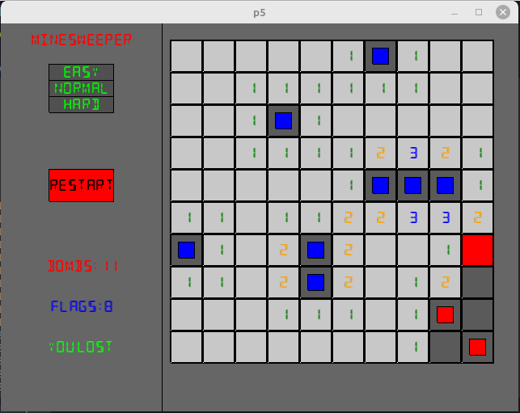
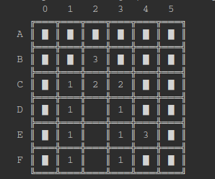

Projet Démineur
Présentation du jeu
Le jeu du démineur (Minesweeper en anglais) est un classique des jeux vidéo, dont les principes sont présentés ci-dessous :
]
- Une grille carrée de taille quelconque (en général 9 ou 10) est présentée, où toutes les cases sont couvertes (le contenu est caché).
- Dans cette grille, on trouve un certain nombre de bombes, ce nombre dépendant de la difficulté choisie :
easy: le nombre de bombes esttaille + 1;ǹormal: le nombre de bombes esttaille + taille//4;hard: le nombre de bombes esttaille + taille//2.
- Une case peut-alors :
- soit contenir une bombe ;
- soit contenir un nombre qui correspond au nombre de bombes présentes dans les 8 cases qui lui sont adjacentes ;
- soit être vide - ce qui signifie qu'elle ne contient pas de bombe et n'est adjacente à aucune.
- le/la joueur·euse doit découvrir (au sens d'enlever la couverture) toutes les cases ne contenant pas de bombes et perd dès qu'une bombe est découverte.
- le/la joueur·euse peut placer des drapeaux (flags) sur les cases qu'il soupçonne contenir une bombe (les cases bleues dans la capture d'écran).
- Lorsqu'il clique sur une case, le/la joueur·euse voit donc trois possibilités :
- soit la case contient une bombe, et il a alors perdu ;
- soit la case est adjacente à une bombe, et donc **seule cette case est découverte" ;
- soit la case n'est pas adjacente à une bombe, et alors la case est découverte, ainsi que toutes ses voisines et leurs voisines etc..., comme si le/la joueur·euse avait cliqué dessus. La propagation s'arrête donc aux cases adjacentes à une bombe, qui sont découvertes, mais pas leurs voisines.
Ainsi sur la capture, le/la joueur·euse a perdu1 ! Il a placé 8 drapeaux au bon endroit, mais a cliqué sur la case entièrement rouge qui contenait une bombe, et n'a pas vu les deux bombes restantes dans les cases ayant le petit carré rouge.
Les fichiers et fonctions du projet
Fichier demineur.py
Imports
On importe le module random pour gérer l'aléatoire, ainsi que la classe Fore du module colorama pour gérer la couleur dans la console.
Classe Cell
Sans rentrer dans les détails, il s'agit de programmation orientée objet (POO), qui est au programme de terminale, mais vous n'aurez rien à changer dans cette partie du programme, qui est là pour vous simplifier le travail au sein du projet.
Cette classe permet « d'étendre » l'ensemble des objets possibles dans Python, en permettant de créer des objets de type Cell. De tels objets possèderont trois attributs :
value: la valeur de la cellule (de typeint), initialisée à0;flag: un booléen prenant pour valeurTruesi la case possède un drapeau, etFalsesinon. Par défaut initialisée àFalse;covered: un booléen prenant pour valeurTruesi la case est découverte, etFalsesinon. Par défaut initialisée àFalse.
On utilise un objet de type Cellde la manière suivante :
>>> c = Cell()
>>> c.value
0
>>> c.value = 20
>>> c.value
20
>>> c.flag = True
>>> c.flag
True
>>> c.covered
False
>>> t = [Cell() for _ in range(5)]
Cell, il faudra l'appeler :
-
soit grâce à son indice :
>>> t[2].value = 3 -
soit en utilisant un parcours par éléments :
valeur`>>> for elem in t : elem.covered = True
Fonction init_grid(taille)
Cette fonction doit créer et renvoyer une grille carrée de dimension taille x taille, contenant un objet de type Cell dans chaque case.
Fonction compute_cell(grid, x, y)
Cette fonction doit mettre à jour la valeur de la cellule de la ligne x et de la colonne y de la grille grid, en fonction du nombre de cases voisines contenant des bombes.
On utilisera le code suivant :
- une cellule ayant pour valeur
-1représentera une bombe ; - une cellule ayant pour valeur
0représentera une case non-adjacente à une bombe ; - une cellule adjacente à une ou des bombes portera une valeur égale au nombre de bombes à laquellle elle est adjacente.
Sur une grille 5x5en mode easy, on pourra par exemple avoir la configuration suivante :

Fonction make_grid(grid, nb_bombes)
Cette fonction doit modifier en place la grille grid pour à la fois placer aléatoirement nb_bombes bombes (sans que deux bombes soient sur la même case), et mettre à jour l'ensemble des cases de la grille.
Fonction affichegrid(grid, colors= False, detonate= False)
Cette fonction permet d'afficher dans la console la grille de jeu de la manière suivante :
-
en jeu la grille est affichée ainsi :

-
à la fin de la partie, on utilise des couleurs (vert pour bon placement, rouge pour erreur) comme dans la capture ci-dessous :

Afin de rendre l'interface agréable, vous devrez utiliser une police monodans la console (comme courrier), et pourrez utiliser les caractères utf-8 suivants :
-
═ et ║ ;
-
╔, ╦, et ╗ ;
-
╠, ╬, et ╣ ;
-
╚, ╩ et ╝
-
█, ◕ et ◘
Les arguments colors et detonate sont des booléens signifiants respectivement que des couleurs doivent être utilisées, et qu'une bombe a explosée (= que la partie est perdue).
Fonction ask_position(grid)
Fonction demandant au joueur son prochain coup, sous la forme d'une chaine de caractères de la forme B3ou fB3, selon que le/la joueur·euse souhaite découvrir ou flaguer une case (ou même supprimer un drapeau), et qui renvoie un tuple sous la forme (flag, indice_ligne, indice_colonne), où flag est un booléen donnant la nature du coup, indice_ligne est l'indice de la ligne de la grille correspondant au coup joué, et de même pour indice_colonne.
fonction propagate(grid, x, y)
Il s'agit d'une des fonctions essentielles du jeu. Si le/la joueur·euse clique sur une case vide(d'attribut valeurégal à 0) de la grille grid d'indice de ligne xet de colonne y, il découvre toutes les cases qui lui sont adjacentes ayant pour valeur 0, 1, ou plus, ainsi que les voisines de celles de valeur 0, et la découverte se propage ainsi de proche en proche.
L'algorithme à utiliser pour permettre cette propagation est le suivant :
Algorithme de propagation
- on crée deux listes
to_uncoveretto_computequi contiennent respectivement les coordonnées des cellules à découvrir et de celles à traiter, qui sont toutes les deux initialisées avec le tuple(x,y)oùxetysont les arguments fournis à la fonction. - tant que la liste
to_computen'est pas vide, on effectue alors es opérations suivantes :- on «pop» de la liste
to_computeson dernier élément, qui donne les coordonnées de la cellule qui va être étudiée, et on change l'attributcoveredde cette cellule àFalse; - si la cellule a pour valeur 0, alors on ajoute toutes ses voisines à la fois à la liste
to_computeet à la listeto_uncover, si elles n'y sont pas déjà présentes.
- on «pop» de la liste
Fonction apply_position(grid, flag, x, y)
Cette fonction applique l'effet d'un coup du joueur sur la grille :
- en plaçant un drapeau sur la cellule de coordonnées
(x, y)si l'argumentflagestTrue; - en découvrant une bombe si le/la joueur·euse a joué sur une case en contenant une ;
- en appliquant la fonction
propagatedans le cas où le/la joueur·euse joue sur une case ne contenant pas de bombes.
Cette fonction renvoie un booléen qui vaut Truesi le jeu se poursuit, et Falsesi le/la joueur·euse a joué sur une bombe.
Fonction count_uncovered(grid)
Cette fonction renvoie le nombre de cases découvertes sur la grille (elle aidera à savoir si le /la joueur·euse a gagné).
Fonction count_flagged(grid)
Cette fonction renvoie le nombre de cases contenant un drapeau, utile pour l'interface graphique.
Fonction main_console(grid, difficulte = 1)
Cette fonction permet de lancer une partie de démineur dans la console, avec une difficulté qui représente le nombre de bombes supplémentaires (en plus de taille) à ajouter à la grille.
Cette fonction traite tous les cas, et affiche donc au joueur s'il a gagné ou perdu.
Fichier demineurP5.py
Ce fichier utilise le module P5, qui est un portage en Python du module p5de javascript, qui permet de créer des interfaces graphiques.
Pour utiliser P5avec Thonny, vous pouvez suivre ce tutoriel
Vous n'avez rien à changer dans ce module, sauf amélioration souhaitée, mais si vos fonctions respectent les spécifications données ci-dessus, le jeu devrait raisonnablement fonctionner (mais il peut être potentiellement très lent...).
Barème du projet
- Un jeu en console fonctionnel (c'est-à-dire permettant de faire une partie) vous apporte 7 pts ;
- Un code correctement commenté vous apporte 3 pts ;
- Si toutes les spécifications sont correctes, vous gagnez 2 pts ;
- Un code lisible, donc avec des noms de variables parlants et des sauts de lignes adéquats, vous rapporte 3 pts ;
- Les 5 points restants correspondent aux améliorations possibles, soit dans la console, soit dans l'interface graphique, par exemple :
- la possibilité de choisir une taille de grille différente ;
- l'introduction d'un chronomètre ;
- une sauvegarde du score possible (s'inspirer par exemple du projet de Bandit Manchot...)
- ...
-
C'est fait exprès... Je suis bien meilleur que ça à ce jeu... Des années de pratique ! ↩